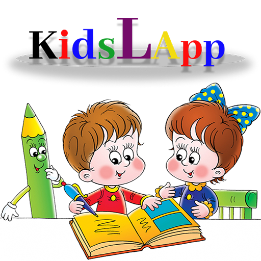
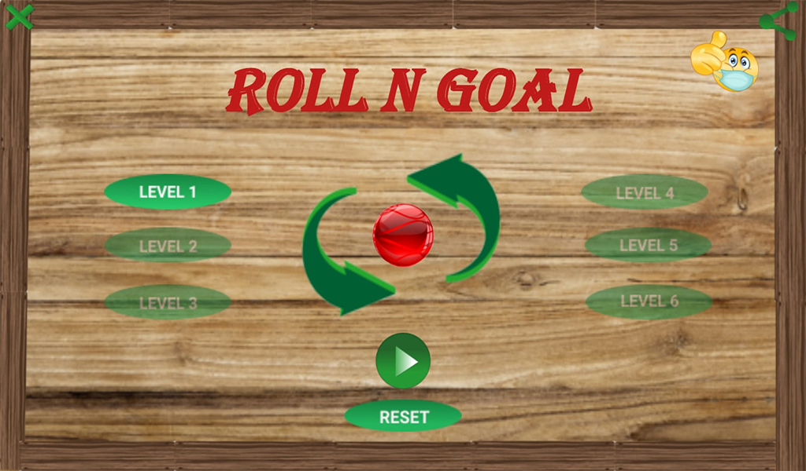
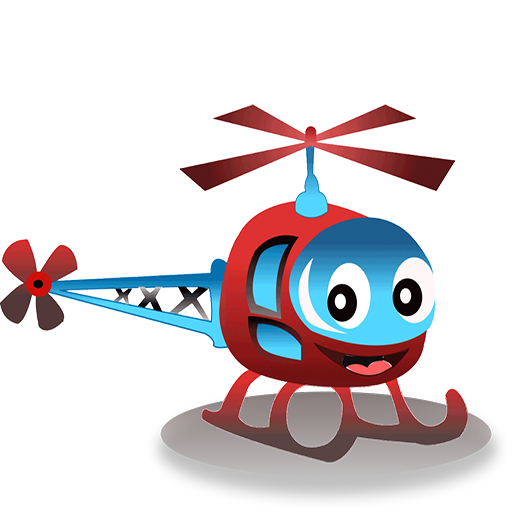

KidsLApp (Kids Learning App)
Kids Learning App (KidsLApp) is a free learning and kid-friendly educational app, that makes
learning fun for children, from toddlers all the way to preschoolers and kindergartners..
This app help kids learn Alphabets, Shapes, Numbers, Colors and Animals..The colorful interactive interface keeps toddlers focused on their learning and listening..
Best of all, Kids Learning App(KidsLApp) is full-featured and free learning app. Toddlers and adults can enjoy learning together.
Our App- KidsLApp is free to Learn, but we need your support to keep it going!
Please leave us a great rating and review on our Playstore page.
So what are you waiting for, just download now!

ROLL N GOAL
Roll a Ball, Rolling is fun!!
This game is a free, offline game; You do not need internet connection to play the game. Keep on playing . Once you find the good rhythm, this game will be easier.
This game Challenge your hand-eye coordination and reaction! The game is highly addictive and challenging.
This Game use accelerometer, as a player you need to tilt your device to move the ball to Green hole avoiding collision with Brown holes. If you hit a Brown Hole you loose the level but can always replay. Now, let's control the ball.
Download new this Roll N Goal game today! It’s lightweight so it only needs minimal memory and battery.
You can keep playing for hours and have fun whenever and wherever you are! ---
Our Game - Roll N Goal is free to play, but we need your support to keep it going!
Please leave us a great rating and review on our Playstore page.
So what are you waiting for, just download now!

CHOPPER
Chopper game is a free, offline game; You do not need internet connection to play the game.
Keep on playing and tapping. Once you find the good rhythm, this game will be easier.
If you keep playing, you can improve your reaction time and score as well.
If you want to help the Chopper to keep on flying, you should keep playing this game!
Can you do it for higher score and try to beat your own previous score?
Download new this CHOPPER game today! It’s lightweight so it only needs minimal memory and battery.
You can keep playing for hours and have fun whenever and wherever you are! ---
Our Game - CHOPPER is free to play, but we need your support to keep it going!
Please leave us a great rating and review on our Playstore page.
So what are you waiting for, just download now!